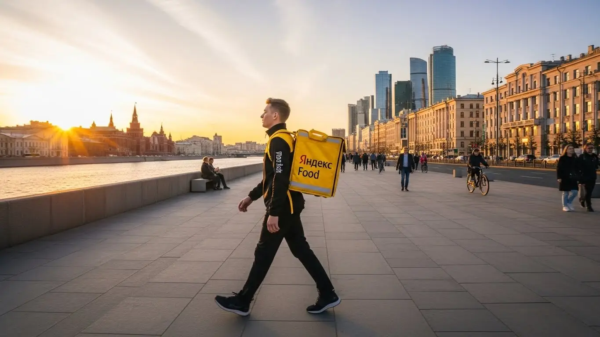

Сколько зарабатывает курьер Яндекс Еда в Елабуге в 2025-2026
- Работа курьером Яндекс Еды в Елабуге: для кого эта вакансия и что вы получите
- Сколько вы будете зарабатывать курьером в Елабуге: калькулятор дохода и разбор выплат
- Реальный заработок курьера в Елабуге: смены и месячный доход
- График работы и форматы занятости
- Требования к кандидату и документы
- Самозанятость, налоги и юридическая чистота
- Пошаговое оформление и первый выход на линию в Елабуге
- Пешком, на вело или на авто: что выгоднее в Елабуге
- Районы, маршруты и «топовые» зоны заказов в Елабуге
- Безопасность, страховка, штрафы и оплата простоя
- Плюсы и возможные минусы работы курьером в Елабуге
- Реальные истории и отзывы курьеров из Елабуги
- Ответы на главные вопросы о работе курьером Яндекс Еды в Елабуге
- Короткие ответы на главные вопросы
- Итоги и ваш следующий шаг
Все города
Думаешь, не пойти ли в курьеры Яндекс Еды, чтобы поднять деньжат в Елабуге? И сразу в голове рой вопросов: а сколько реально выйдет чистыми, если вычесть бензин и налоги? Не «убью» ли я свою машину на местных дорогах за пару месяцев? И не застряну ли в пробке на проспекте Нефтяников в час пик, получив штраф за опоздание? Знакомые мысли? Тогда ты по адресу, потому что я расскажу не про сферическую работу в вакууме, а про реальную работу курьером Яндекс Еда в Елабуге.
Рекламные обещания про «доход до X тысяч» — это одно, а реальность, где твой заработок зависит от района, времени суток и твоего рейтинга — совсем другое. Многие новички в Елабуге сходят с дистанции в первый же месяц, потому что не понимают, как устроен приоритет, почему в 4-м микрорайоне заказов густо, а в Поле Чудес — пусто, и как не терять деньги на холостом пробеге. Они совершают одни и те же ошибки, а потом жалуются, что работа невыгодная.
В этом гиде мы всё разложим по полочкам. Я честно посчитаю, сколько можно заработать пешком, на велосипеде и на авто с учётом елабужских реалий. Покажу, в каких районах и в какое время самый «жир», а куда лучше не соваться. Разберём, как погода и сезонность влияют на заказы, за что реально штрафуют и как этого избежать. И главное — ты поймёшь, стоит ли эта игра свеч именно для тебя, здесь, в Елабуге. А если захочешь сразу перейти к делу, то все актуальные условия и форма заявки есть на странице про работу курьером Яндекс Еда в Елабуге.
Меня зовут Алексей. Я сам не один год откатал с жёлтым рюкзаком по Елабуге, а сейчас у меня свой небольшой таксопарк-партнёр. Я видел эту кухню со всех сторон — и как новичок, и как опытный курьер, и как тот, кто помогает ребятам выходить на линию. Так что никакой рекламной шелухи не будет, только мясо и реальный опыт. Ну что, погнали?
Чтобы тебе было проще сориентироваться, дальше будет короткий гид по ключевым темам статьи.
Что ты точно узнаешь из этого разбора
В этой статье ты ТОЧНО узнаешь:
- Сколько реально можно заработать в Елабуге за смену и за месяц, если работать пешком, на велосипеде или на авто?
- В каких районах Елабуги больше всего заказов и как выбирать «фиолетовые зоны», чтобы не кататься впустую?
- Что такое «оплата простоя» и как она защищает твой доход, если в городе временно нет заказов?
- Как за один день оформиться и выйти на первую смену, и что для этого нужно из документов?
- Какие слоты и время суток самые прибыльные и как погода в Елабуге напрямую влияет на заработок?
- Что выгоднее для Елабуги — работать пешком, на велосипеде или на своей машине, и в чём плюсы каждого варианта?
А если тебе некогда читать всю статью — переходи сразу к заключению, где ты найдёшь короткие ответы на все эти вопросы и указания, в каких разделах искать подробности.
А для наглядности — основные цифры и факты в одной картинке.
Работа курьером в Елабуге: ключевые цифры

Работа курьером Яндекс Еды в Елабуге: для кого эта вакансия и что вы получите
Многие думают, что работа курьером — это подработка для студентов на каникулах. На деле же это универсальный вариант, который подходит самым разным людям, особенно в таком компактном городе, как Елабуга. Здесь нет столичных расстояний и пробок, а значит, можно эффективно работать и хорошо зарабатывать, не тратя полжизни на дорогу. Давай разберёмся, кому эта вакансия подойдёт идеально и какие реальные плюсы ты получишь.
Кому подойдёт эта работа в Елабуге
По моему опыту, в курьеры в Елабуге идут люди с совершенно разными целями. Во-первых, это, конечно, студенты местных учебных заведений, например, Елабужского института КФУ. Для них это отличная подработка после пар: вышел на 3–4 часа, заработал на свои расходы и свободен. Во-вторых, это люди, у которых уже есть основная работа, но нужен дополнительный доход. Свободный график позволяет выходить на смены по вечерам или только на выходных.
Эта вакансия — идеальный старт для тех, кто ищет работу без опыта. Тебя не будут спрашивать про диплом и стаж, главное — ответственность и умение ориентироваться в городе. Для водителей на своем авто это возможность заставить машину приносить деньги, не связываясь с такси.
И самое главное — это вариант для всех, кому важна свобода. Ты сам себе начальник, планируешь свой график через приложение «Яндекс Про» и получаешь заработанные деньги на карту. Плюс, есть ежедневные выплаты — не нужно ждать зарплаты целый месяц.
Главные преимущества для жителей районов 4-го микрорайона, Поля Чудес, Танайки
Одно из ключевых удобств работы в Елабуге — возможность доставлять заказы буквально в своём районе. Тебе не нужно ехать через весь город, чтобы начать смену. Например, если ты живёшь в 4-м микрорайоне, можно выбрать эту зону в приложении и развозить заказы из местных кафе и магазинов по соседним домам. То же самое касается и жителей частного сектора, например, в районе Поля Чудес или в микрорайоне Танайка.
Система «Яндекс Про» устроена так, что ты видишь карту города с зонами повышенного спроса. Можно просто выйти из дома, активировать слот и начать получать заказы в радиусе нескольких километров. Это экономит и время, и деньги на проезд. Ты работаешь на знакомой территории, знаешь все короткие пути и дворы, что напрямую влияет на скорость доставки и, как следствие, на твой заработок.
Что по деньгам и условиям
Если говорить о деньгах прямо, то в Елабуге активный курьер может зарабатывать от 1500 до 3000 рублей за полную смену (8–10 часов). Если рассматривать это как подработку на 3–4 часа в день, то выходит 700–1200 рублей. В месяц при полной занятости вполне реально выйти на доход в 40 000 – 60 000 рублей, особенно если работать на автомобиле и брать заказы в часы пик.
Главные условия работы просты и прозрачны. Оформление идёт через самозанятость, что обеспечивает официальный доход и простоту уплаты налогов. Деньги приходят на карту, а ежедневные выплаты позволяют выводить их, когда удобно. График полностью свободный — ты сам выбираешь дни и часы работы в приложении. И повторюсь, никакого опыта не требуется: проходишь короткое онлайн-обучение, получаешь термокороб (термосумку) и можешь выходить на линию.
Из практики: был у меня парень, студент-заочник из 4-го микрорайона. Начал работать пешим курьером по вечерам. За 4 часа стабильно делал 800–1000 рублей, доставляя заказы в своём же районе. Потом накопил на простой велосипед и стал брать больше заказов — его доход вырос до 1500 рублей за те же 4 часа. Это реальный пример, как можно начать с нуля и без вложений.
В общем, работа курьером в Елабуге — это не про мифические миллионы, а про реальную возможность иметь стабильный доход с гибкими условиями. Главное преимущество — ты можешь работать рядом с домом и получать деньги сразу. Мой совет: не бойся пробовать, даже если у тебя нет опыта — здесь всё интуитивно понятно.

Сколько вы будете зарабатывать курьером в Елабуге: калькулятор дохода и разбор выплат
Один из самых частых вопросов от новичков: «Сколько я буду получать?». В Яндекс Еде нет фиксированного оклада, и это, на мой взгляд, плюс. Твой доход напрямую зависит от твоей активности и смекалки. Заработок — это не просто плата за заказ, а целая система из нескольких компонентов. Понимание этой системы — ключ к тому, чтобы зарабатывать больше. Давай разберём по косточкам, из чего складывается твоя зарплата курьера.
Из чего складывается доход курьера
Твой итоговый заработок за смену формируется из нескольких частей. Важно понимать каждую из них, чтобы видеть, где можно поднажать.
- Оплата за заказ. Базовая сумма за то, что ты забрал заказ из точки А и доставил в точку Б. Она включает подачу в ресторан или магазин и вручение клиенту.
- Доплата за расстояние. Чем дальше ехать или идти, тем больше заплатят. Система автоматически рассчитывает оптимальный маршрут и начисляет оплату за каждый километр пути.
- Повышающие коэффициенты. В приложении «Яндекс Про» есть карта спроса. В часы пик (обед с 12 до 15, ужин с 18 до 21), в плохую погоду или в праздники некоторые зоны окрашиваются в фиолетовый цвет. Это значит, что заказов много, а курьеров не хватает. Стоимость каждого заказа в такой зоне умножается на коэффициент, и заработать можно в 1,5–2 раза больше.
- Бонусы. Сервис часто предлагает персональные цели. Например, «выполни 20 заказов за 3 дня и получи бонус 1000 рублей». Это отличный способ дополнительно увеличить свой доход.
- Чаевые. Все чаевые, которые клиенты оставляют через приложение, поступают на твой счёт в полном объёме. Яндекс не берёт с них комиссию.
- Оплата простоя. Важное преимущество: если ты выбрал плановый слот, вышел на линию, а заказов временно нет, сервис начисляет минимальную гарантированную оплату за час. Ты не останешься с нулём, даже если спрос временно упадёт.
- Компенсация проезда. Иногда, если заказ очень дальний, а ты пеший курьер, система может предложить частичную компенсацию проезда на общественном транспорте.
Как пользоваться калькулятором дохода
На сайте вакансии есть специальный калькулятор, который помогает прикинуть примерный заработок. Пользоваться им просто. Сначала ты выбираешь свой город — Елабуга. Затем указываешь тип доставки: пеший курьер, велокурьер или курьер на своем автомобиле. После этого выставляешь, сколько часов в день и сколько дней в неделю планируешь работать.
Прикинь свой доход в Елабуге
≈ 160 часов в месяц
*Это примерный расчёт на основе средней ставки 420 ₽/час для Елабуги. Реальный доход зависит от спроса, бонусов, чаевых и типа доставки (пешком, вело или авто).
Этот калькулятор — отличный ориентир. А чтобы узнать все актуальные условия, посмотреть ответы на другие вопросы и сразу подать заявку, загляни на страницу про работу курьером Яндекс Еда в твоём городе — там собрана вся официальная информация.
Примеры расчёта для пешего, вело- и авто‑курьера в Елабуге
Чтобы было понятнее, давай рассмотрим три реальных сценария для Елабуги.
- Пеший курьер. Студент работает в историческом центре города, в районе Чёртова городища, где много кафе. Выходит на 4 часа в обеденное время (12:00–16:00). Заказы короткие, но их много. За смену он выполняет 8–10 заказов и зарабатывает в среднем 900–1300 рублей.
- Курьер на велосипеде (велокурьер). Работает по вечерам, 5 дней в неделю по 5 часов. Его зона — спальные районы, например, 4-й и 6-й микрорайоны. На велосипеде он передвигается быстрее пешего, успевает брать больше заказов на средние дистанции. Его средний доход за смену — 1300–1800 рублей.
- Водитель-курьер на своем авто. Выходит на полную смену в субботу, работает 8–10 часов. Он берёт заказы по всему городу, включая дальние доставки в промзону ОЭЗ «Алабуга» или в пригородные посёлки. В плохую погоду его доход резко возрастает за счёт коэффициентов. За такую смену он может заработать 2800–4500 рублей (до вычета расходов на бензин).
Вот кейс из жизни: один из моих водителей решил попробовать себя в доставке. Сначала катался только по центру Елабуги, зарабатывал средне. Я ему посоветовал в выходной день выбрать зону, охватывающую весь город, и не бояться дальних заказов. В первую же дождливую субботу он отработал 9 часов и привёз домой 4200 рублей «грязными». После этого он понял, что на машине самые выгодные заказы — это как раз те, от которых отказываются пешие и велокурьеры.
В итоге, твой заработок — это не случайность, а результат твоего подхода. Анализируй карту спроса в «Яндекс Про», выбирай правильный транспорт для разных районов и не ленись выходить в пиковые часы. И помни про гарантию минимального дохода — это твоя страховка от неудачного дня.

Реальный заработок курьера в Елабуге: смены и месячный доход
Давай к главному — к деньгам. Никаких заоблачных цифр из рекламы, только реальные расклады по Елабуге. Сразу скажу: заработок здесь, конечно, не московский, но для нашего города более чем достойный, если подходить к делу с умом. Твой доход в Яндекс Еде — это не просто ставка в час, а результат твоей скорости, знания города и умения ловить момент.
Заработок напрямую зависит от трёх вещей: как ты доставляешь (пешком, на велосипеде или на своем авто), сколько часов работаешь и в какое время выходишь на линию. Кто-то делает 15–20 тысяч в месяц, выходя на подработку по вечерам, а кто-то на машине стабильно привозит домой 70–80 тысяч, работая полную неделю. Всё в твоих руках, и система абсолютно прозрачна.
Из практики: у меня есть знакомый водитель-курьер, парень 28 лет, который раньше работал на заводе. Он уволился и перешёл на полную занятость в доставку на своей «Гранте». Работает 5 дней в неделю по 8–10 часов, обязательно захватывая вечерние пики. В среднем за смену у него выходит 3500–4000 рублей грязными. За вычетом бензина и налога (он самозанятый) в месяц чистыми остаётся около 70 000 рублей. Он говорит, что такая зарплата больше, чем на заводе, и главное — сам себе хозяин.
Диапазон дохода для подработки и полной занятости
Если говорить конкретнее, то вилки по зарплате курьера в Елабуге выглядят примерно так. Учитывай, что это средние цифры, в удачный день с хорошими коэффициентами может быть и больше.
Подработка (2–4 часа в день, несколько раз в неделю):
- Пеший курьер: Идеально для центра города. За короткую смену в 3–4 часа можно заработать 600–900 рублей. В месяц выходит 12 000–18 000 рублей, если работать регулярно.
- Велокурьер: На велосипеде ты мобильнее, поэтому и заказов успеваешь сделать больше. За те же 3–4 часа доход составит 800–1300 рублей. В месяц это уже 16 000–25 000 рублей.
- Автокурьер: Самый выгодный вариант для подработки, особенно в плохую погоду. За вечерний слот можно сделать 1200–2000 рублей. Месячный доход при таком графике — 25 000–40 000 рублей.
Полная занятость (8–10 часов в день, 5–6 дней в неделю):
- Пеший курьер: За полный день выходит 1800–2500 рублей. В месяц это 40 000–55 000 рублей. Физически тяжело, но реально.
- Велокурьер: Дневной заработок — 2500–3500 рублей. Месячный доход может достигать 55 000–70 000 рублей. Отличный вариант для тёплого времени года.
- Автокурьер: Здесь самые высокие цифры. В день можно зарабатывать 3500–5500 рублей. В месяц это выливается в 70 000–100 000 рублей до вычета расходов на топливо.
Сравнение примерного дохода в Елабуге
| Тип занятости | Пеший курьер (в месяц) | Велокурьер (в месяц) | Автокурьер (в месяц, до вычета расходов) |
|---|---|---|---|
| Подработка (3-4 часа/день) | 12 000 – 18 000 ₽ | 16 000 – 25 000 ₽ | 25 000 – 40 000 ₽ |
| Полная занятость (8-10 часов/день) | 40 000 – 55 000 ₽ | 55 000 – 70 000 ₽ | 70 000 – 100 000 ₽ |
В итоге, реальный заработок курьера в сервисах Яндекса в Елабуге сильно зависит от выбранного формата. Для стабильного и высокого дохода лучше всего подходит автомобиль, а для лёгкой подработки или летнего фитнеса — велосипед. Главный совет: не смотри на голые цифры, а оценивай свои возможности и цели. Начать можно с малого и постепенно наращивать обороты.
Как район, время суток и погода влияют на доход
Твой заработок — это не фиксированная сумма. Он постоянно меняется в зависимости от спроса. Поняв эту логику, ты сможешь увеличить свой доход на 20–30% больше, чем те, кто катается бездумно.
Главный фактор — это повышенные коэффициенты и бонусы. Когда в определённом районе заказов становится больше, чем свободных курьеров, Яндекс начинает доплачивать за каждый заказ. В приложении «Яндекс Про» такие зоны подсвечиваются разными цветами — от жёлтого до фиолетового. Чем ярче цвет, тем выше доплата. В Елабуге самые «жирные» зоны — это центр (проспект Мира, улица Нефтяников) в обед и новые микрорайоны (4-й, 6-й) по вечерам.
Время суток решает всё. Пики спроса стандартные: обед с 12:00 до 14:00 и ужин с 18:00 до 21:00. В это время люди массово заказывают еду из ресторанов. Пятница и суббота вечером — это вообще «золотые часы». Погода — твой союзник. Как только начинается дождь, снегопад или сильный мороз, большинство курьеров прячутся по домам, а количество заказов взлетает. Коэффициенты могут вырастать в 1.5–2 раза. Плюс, в плохую погоду клиенты чаще оставляют хорошие чаевые из сочувствия и благодарности.
Советы по увеличению заработка от опытных курьеров
Чтобы не просто работать, а именно зарабатывать, нужно подходить к сменам стратегически. Вот несколько проверенных советов от моих ребят и от меня лично.
Первое и главное — выбирай правильные слоты. Не стоит брать длинный слот с 10 утра до 8 вечера. Лучше взять два коротких, но в пиковое время: например, с 12:00 до 15:00 и с 18:00 до 22:00. Так ты отработаешь самые прибыльные часы и не будешь выгорать в периоды затишья. Всегда смотри расписание слотов в «Яндекс Про» заранее и бронируй самые выгодные.
Второй момент — следи за картой спроса в приложении. Не сиди на месте в зоне, где нет заказов. Если видишь, что соседний район «горит» фиолетовым — двигайся туда, чтобы получать больше заказов. Для автокурьера это пара минут езды, которые окупятся высоким чеком. В Елабуге часто бывает так, что в центре затишье, а в 4-м микрорайоне — шквал заказов. Будь мобильным.
И ещё: не брезгуй мультизаказами, когда сервис предлагает взять сразу 2–3 доставки по пути. Да, это сложнее в плане логистики, но оплата за них суммируется, и в итоге твой доход в час значительно вырастает. И, конечно, будь вежлив с клиентами. Простое «хорошего дня» может принести тебе 50–100 рублей чаевых, а за месяц это складывается в приятную сумму.

График работы и форматы занятости
Одно из главных преимуществ работы курьером в Яндексе — свободный график. Ты сам решаешь, когда и сколько тебе работать. Хочешь — выходишь на пару часов после основной работы, хочешь — устраиваешь себе полноценный рабочий день. Это не пустые слова, а реальный инструмент, который позволяет вписать доставку в любой образ жизни.
Никто не стоит над душой с планом: всё управление сменами происходит через приложение «Яндекс Про». Ты видишь доступные слоты в разных районах города, выбираешь удобный по времени и продолжительности, подтверждаешь и выходишь на линию. Такая система идеально подходит и студентам, и тем, кто ищет подработку, и тем, кому нужен основной источник дохода с гибким графиком.
Из практики: у нас работает студент из Елабужского института КФУ. Он живёт в общежитии, учится днём. Чтобы не просить денег у родителей, он выходит на доставки в Яндекс Еде 3–4 раза в неделю по вечерам, с 19:00 до 23:00, на велосипеде. Катается по центру и ближайшим микрорайонам. За месяц у него набегает 18–22 тысячи рублей. Ему хватает и на личные расходы, и чтобы девушку в кино сводить. Говорит, что это лучше, чем сидеть на кассе в магазине за копейки.
Подработка после учёбы или основной работы
Совмещать подработку курьером с другой деятельностью проще простого. Вот пара реальных сценариев, как это делают люди в Елабуге.
Пример первый: студент. Учёба заканчивается в 15:00–16:00. Можно отдохнуть, сделать уроки и к 18:00 выйти на линию. Как раз к началу вечернего пика заказов. Работаешь 3–4 часа, до 21:00–22:00, и свободен. За такой вечер велокурьер может заработать 1000–1500 рублей. Плюс можно взять полную смену в один из выходных дней. В итоге получается отличная прибавка к стипендии без ущерба для учёбы.
Пример второй: сотрудник с основной работой. График, допустим, стандартный, с 8 до 17. В будни сил уже нет, но есть вечера пятницы и целые выходные. Можно выходить на своем авто в пятницу с 18:00 до полуночи и в субботу на 8–10 часов. Это самые прибыльные дни. За такие выходы можно получать дополнительный доход в 15 000–20 000 рублей в месяц. Это реальная возможность быстрее закрыть кредит, накопить на отпуск или просто иметь финансовую подушку безопасности.
Полная занятость: как выглядит типичный день курьера
Если рассматривать работу в Яндекс Доставке как основную, то день строится вокруг пиков спроса. Типичный день автокурьера в Елабуге, нацеленного на максимальный заработок, выглядит примерно так.
Начало дня — около 11:00. Нет смысла выходить в 8 утра, заказов ещё мало. Курьер открывает «Яндекс Про», смотрит на карту спроса и едет в зону, где ожидается активность, например, в центр города. С 12:00 до 14:00 идёт плотный поток заказов на обеды из кафе на проспекте Мира и Казанской улице. После 14:30 наступает затишье. Это время можно использовать для обеда, отдыха или выполнения заказов из магазинов, которые не так привязаны ко времени.
Второй пик начинается около 17:30–18:00 и длится до 21:00–22:00. В это время основные заказы из Яндекс Еды идут в жилые районы — 4-й микрорайон, Танайка, верхняя часть города. Здесь самые высокие коэффициенты и больше всего чаевых. После 22:00 поток заказов спадает, можно выполнить ещё пару доставок и завершать смену. За такой день с двумя пиками и перерывом посередине и набегает основная касса.
Как планировать слоты и выходы через приложение «Яндекс Про»
«Яндекс Про» — твой главный рабочий инструмент. Именно здесь ты управляешь своим графиком. Есть два основных формата выхода на линию: свободные выходы и плановые слоты. Свободный выход — это когда ты просто нажимаешь кнопку «На линию» в любой момент и начинаешь получать заказы. Плюс — полная свобода. Минус — зарплата зависит только от текущего количества заказов.
Плановые слоты — это когда ты заранее бронируешь смену на определённое время в конкретном районе. Например, с 18:00 до 22:00 в 4-м микрорайоне. Плюс таких слотов в том, что на них часто действует гарантированный минимальный доход. Даже если заказов будет мало, сервис доплатит тебе до определённой суммы. Это твоя страховка от простоя и часть хороших условий работы.
Планирование — ключ к стабильному заработку. Заходи в приложение, открывай раздел «Расписание» и смотри доступные слоты на несколько дней вперёд. Самые выгодные (вечерние, выходные) разбирают быстро, так что не тяни. И самое главное — если забронировал слот, будь на месте вовремя. Опоздания и пропуски плановых смен негативно влияют на твой рейтинг Активности. А чем выше рейтинг, тем больше у тебя приоритет при распределении заказов. Стабильность и пунктуальность напрямую ведут к стабильным выплатам и высокому доходу.

Требования к кандидату и документы
Многие думают, что для работы курьером нужны особые навыки или сложный пакет документов. На деле всё гораздо проще: это отличная подработка без опыта, для которой не понадобится диплом или многолетняя практика. Главные требования к курьеру — это ответственность, пунктуальность и желание зарабатывать. Сервис максимально упростил все формальности, чтобы ты мог выйти на линию как можно быстрее.
Возраст, гражданство и базовые условия
Давай по порядку разберёмся, что от тебя потребуется. Первое и самое главное — возраст. Начать работу курьером в Яндекс Еде можно строго с 18 лет. Верхней планки нет: если ты в хорошей физической форме и готов к активной работе, возраст не помеха. У меня в парке есть водители, которым за 50, и они отлично справляются.
Второе — гражданство. Работать могут граждане Российской Федерации, а также граждане стран Евразийского экономического союза (ЕАЭС): Армении, Беларуси, Казахстана и Кыргызстана. Что касается физической формы, то для пешего курьера важно быть готовым много ходить, для велокурьера — крутить педали на приличные расстояния. Для водителя-курьера на своём авто главное — уверенное вождение и знание города. И конечно, для всех нужен смартфон на базе Android, потому что рабочее приложение «Яндекс Про» работает именно на этой системе.
Какие документы нужны для работы курьером
Список документов для работы в Яндекс Еде минимальный, и это одно из ключевых условий для быстрого старта. Скорее всего, всё необходимое у тебя уже есть под рукой, и никаких сложных справок собирать не придётся.
Вот что нужно подготовить заранее:
- Паспорт. Основной документ для подтверждения твоей личности и возраста. Подойдёт паспорт РФ или страны ЕАЭС.
- ИНН (Идентификационный номер налогоплательщика). Он нужен для регистрации в качестве самозанятого и уплаты налога. Если не помнишь свой номер, его легко узнать за пару минут на сайте ФНС.
- Банковская карта. Подойдёт карта любого российского банка, оформленная на твоё имя. Именно на неё будут приходить ежедневные выплаты твоего заработка.
- Медицинская книжка. Она обязательна, если ты планируешь доставлять заказы из ресторанов и кафе. В Елабуге её можно оформить в городской поликлинике или частных медцентрах. Советую сделать это заранее, чтобы не ограничивать себя в типах заказов.
Можно ли работать с 16 лет и какие есть альтернативы
Вопрос, со скольки лет можно устроиться в доставку, — один из самых частых. Отвечаю прямо: в Яндекс Еду берут строго с 18 лет. Никаких исключений для 16- или 17-летних кандидатов, даже с согласия родителей, нет. Это связано с законодательством и полной материальной ответственностью, которую несёт курьер за заказы и денежные средства. Сервис работает строго в рамках закона, поэтому возрастное ограничение — это не прихоть, а юридическое требование.
Если тебе ещё нет 18, но очень хочется подработать, не стоит отчаиваться. В Елабуге есть другие варианты для подростков. Например, можно устроиться промоутером для раздачи листовок, помощником в местные кофейни или поискать вакансии в городских парках на летний период. Это тоже даст хороший опыт и первые заработанные деньги, а как только исполнится 18 — добро пожаловать в доставку.
Был у меня случай: парень, студент местного филиала КФУ, очень хотел подрабатывать курьером. Переживал, что сбор документов займёт кучу времени. На деле паспорт и ИНН у него были, цифровую карту он открыл в приложении банка за пять минут, а медкнижку сделал за два дня. Через три дня после того, как он заполнил анкету, он уже выполнял свой первый заказ в 4-м микрорайоне.
Как видишь, условия работы курьером в Яндекс Еде вполне адекватные. Главное — быть совершеннолетним, иметь базовый пакет документов и желание зарабатывать. Советую не откладывать оформление медкнижки, чтобы сразу получить доступ ко всем типам заказов и не терять в доходе.
Самозанятость, налоги и юридическая чистота
Многих новичков пугает слово «самозанятость», оформление статуса и необходимость платить налоги. Кажется, что это сложно, муторно и непонятно. На самом деле, это самый простой и прозрачный способ работать официально, получая «белый» доход. Забудь про серые зарплаты в конвертах и страх перед налоговой. Формат самозанятости (или налог на профессиональный доход — НПД) создан специально для таких, как мы — кто работает на себя.
Почему курьеры Яндекс Еды работают как самозанятые
Сотрудничество через самозанятость — это стандарт для работы с крупными цифровыми платформами вроде Яндекса. Это выгодно и удобно обеим сторонам. Для тебя как для курьера это означает полную легальность и официальный статус. Твой доход подтверждён, и ты можешь, например, без проблем взять кредит в банке или получить визу.
Главный плюс — простота. Тебе не нужно вести сложную бухгалтерию, сдавать декларации или нанимать бухгалтера. Все операции проходят через удобное приложение «Мой налог».
Ты работаешь легально, платишь минимальный налог и спишь спокойно. Это современный формат, который избавляет от лишней бюрократии и позволяет сосредоточиться на главном — заработке.
Как за 10 минут оформить самозанятость через «Мой налог»
Регистрация статуса самозанятого занимает не больше времени, чем заказ пиццы. Всё делается онлайн, никуда ходить не нужно. Процесс интуитивно понятен и не вызовет сложностей даже у тех, кто с техникой на «вы».
Вот простая пошаговая схема:
- Скачай приложение. Зайди в Google Play на своём Android-смартфоне и найди официальное приложение ФНС «Мой налог».
- Начни регистрацию. Открой приложение и выбери самый простой способ — «Регистрация по паспорту РФ».
- Отсканируй паспорт. Наведи камеру телефона на главный разворот паспорта. Приложение само распознает все данные. Проверь, чтобы всё было верно.
- Сделай селфи. Приложение попросит тебя сфотографироваться. Это нужно для подтверждения личности, чтобы никто не смог зарегистрироваться от твоего имени.
- Подтверди регистрацию. После проверки данных нажми кнопку «Подтверждаю». Вот и всё! Через несколько минут придёт уведомление, что ты официально стал самозанятым.
Сколько и как платить налоги
Система налогообложения для самозанятых — одна из самых выгодных в стране. Ставка налога фиксированная и зависит от того, от кого ты получаешь деньги. Так как ты будешь получать доход от юридического лица (Яндекс или его партнёры), твоя ставка составит 6%. Никаких других скрытых платежей, взносов в пенсионный фонд или страховых отчислений делать не нужно.
При этом сам процесс уплаты налога не потребует от тебя никаких усилий — он полностью автоматизирован. Яндекс сам передаёт информацию о твоих доходах в налоговую службу. В приложении «Мой налог» ты видишь все поступления. До 12-го числа каждого месяца приложение автоматически рассчитывает сумму налога за предыдущий месяц. Тебе остаётся только оплатить его до 28-го числа. Сделать это можно прямо в приложении, привязав банковскую карту. Это гораздо проще и безопаснее, чем работать неофициально и постоянно переживать.
Один из моих водителей долгое время работал «всерую» в другой конторе, получал наличку. Когда я предложил ему перейти к нам и оформить самозанятость, он сначала отнекивался, боялся налогов. Я ему на пальцах показал: вот твой доход, вот 6% с него. Всё прозрачно. Через пару месяцев он пришёл и сказал спасибо. Ему понадобился потребительский кредит на ремонт в квартире, и банк без вопросов его одобрил, увидев официальные поступления на карту.
Итог простой: самозанятость — это не проблема, а инструмент. Он даёт тебе легальный статус, официальный доход и спокойствие за минимальный налог. Мой совет — не бойся этого шага. Пройди регистрацию сразу: это обязательное условие, которое в итоге работает на тебя.
Пошаговое оформление и первый выход на линию в Елабуге
Многие думают, что устроиться на работу — это долго: собеседования, бумажки, ожидание. В Яндекс Еде всё иначе. Весь процесс от анкеты до первого заработка построен так, чтобы ты мог начать получать доход максимально быстро, буквально за один день. Это отличный вариант, если нужна подработка или быстрый старт без опыта. Главное — просто следовать понятным шагам в приложении.
Шаг 1–2: анкета и онлайн‑обучение
Всё начинается с простой анкеты на сайте. Чтобы стать курьером, не нужно проходить долгих собеседований. Нужны только базовые данные: ФИО, дата рождения, номер телефона. После этого скачиваешь приложение «Яндекс Про», где и будет проходить вся дальнейшая работа. Система проверит твои документы — обычно это занимает от 15 минут до пары часов.
Дальше — короткое онлайн-обучение. Это не нудные лекции, а несколько видеороликов и тестов. Тебе расскажут об основах: как принимать и передавать заказ, как общаться с клиентом и поддержкой, как пользоваться термосумкой. В конце будет небольшой тест, чтобы убедиться, что ты всё понял. Отнесись к этому серьёзно — эти знания сэкономят тебе нервы и время на первых заказах.
Шаг 3: получение сумки и доступа к заказам в Елабуге
Как только обучение пройдено, тебе откроют доступ к заказам. Для работы с доставкой еды понадобится фирменный термокороб (или термосумка). В Елабуге его можно получить через партнёров сервиса. Не нужно никуда далеко ехать — в приложении «Яндекс Про» появится карта с адресами ближайших точек, где можно забрать экипировку.
Обычно это офис одного из таксопарков-партнёров. Приходишь, показываешь свой профиль в приложении, и тебе выдают всё необходимое. Иногда сумку могут даже привезти на дом. С этого момента ты полностью готов к работе. Весь процесс получения экипировки редко занимает больше одного дня.
Шаг 4: первый слот и первый доход
Теперь самое интересное — первый доход. Открывай «Яндекс Про», смотри на карту Елабуги и выбирай свой первый слот. Слоты — это основа свободного графика: ты сам решаешь, когда выходить на линию. Для начала советую выбрать короткий слот на 3–4 часа в своём районе, например, в 4-м или 6-м микрорайоне, где ты знаешь каждый двор. Так будет спокойнее.
Выходишь на линию, и приложение начинает предлагать заказы. Принимаешь первый, идёшь в ресторан, забираешь пакет, относишь клиенту. В приложении сразу видишь, сколько заработал. Одно из главных преимуществ работы курьером в Яндексе — ежедневные выплаты. Первые деньги могут прийти на карту уже в тот же день. Это, пожалуй, лучшее чувство: утром заполнил анкету, а вечером уже держишь в руках свой первый заработок.
Вот тебе живой пример. Парень-студент из Елабуги заполнил анкету утром, пока сидел на паре. Днём прошёл обучение, а после обеда заехал к партнёру за сумкой. Вечером он вышел на трёхчасовой слот в своём районе, разнёс четыре заказа из местного кафе и заработал первые 650 рублей. Никакой бюрократии, всё просто и быстро.
В итоге, весь процесс от регистрации до первого заказа занимает от нескольких часов до одного дня. Никаких сложных этапов нет, система ведёт тебя за руку. Чтобы ускорить оформление, заранее подготовь фото паспорта и реквизиты банковской карты. Также для получения выплат понадобится статус самозанятого — его можно оформить онлайн за 10–15 минут.

Пешком, на вело или на авто: что выгоднее в Елабуге
Выбор транспорта — ключевой момент, от которого зависят твой доход и условия работы. В Елабуге у каждого способа доставки есть свои плюсы и минусы. Нет универсально «лучшего» варианта, есть тот, который подходит под конкретные задачи, районы и твой стиль жизни. Давай разберёмся, что к чему.
Пеший курьер: для центра и плотной застройки в Елабуге
Если ты живёшь недалеко от центра или ищешь подработку на несколько часов в день, пеший курьер — твой вариант. В исторической части Елабуги, в районе Казанской улицы и набережной, много заказов Яндекс Еды из кафе и ресторанов, которые часто нужно доставить в соседние дома или офисы. Здесь на машине бывает сложно припарковаться, а пешком ты легко срежешь путь через дворы и скверы.
Пеший курьер идеален для коротких дистанций до 2 км. Ты не тратишься на бензин и обслуживание транспорта, а вся работа превращается в полезную прогулку. Основной минус — зависимость от погоды и физическая выносливость. Но для подработки на несколько часов в день в хорошую погоду — отличный старт.
Велокурьер: быстрые доставки между спальными районами
Курьер на велосипеде — это золотая середина. Он быстрее пешехода и манёвреннее автомобиля. Для Елабуги это особенно актуально при доставке между спальными районами, например, между 4-м и 6-м микрорайонами или в районе «Поля Чудес». Пока автомобили стоят на светофорах на проспекте Мира, ты уже едешь по тротуару или велодорожке.
Велокурьер может брать заказы на более дальние расстояния, чем пеший, а значит, и средний чек за заказ у него выше. Плюс, это отличный способ поддерживать себя в форме — по сути, тебе платят за фитнес. Главное — иметь исправный велосипед и быть готовым крутить педали.
Водитель‑курьер: заказы по всему городу и пригороду Тарловка, Поспелово
Работа курьером на своем авто открывает максимум возможностей для заработка. Ты можешь брать самые дорогие заказы Яндекс Доставки: из гипермаркетов, большие заказы из ресторанов, поездки в отдалённые районы или даже в пригород, например, в Тарловку или Поспелово. В плохую погоду — дождь, снегопад, сильный мороз — спрос на автодоставку резко возрастает, а вместе с ним и твой потенциальный доход.
Конечно, есть и расходы: бензин, амортизация, страховка. Но при грамотном подходе доход водителя-курьера всегда будет выше. Ты не зависишь от погоды, можешь работать длинные смены и брать несколько заказов одновременно, если они по пути. Это вариант для тех, кто нацелен на серьёзный и стабильный заработок.
Сравнение форматов доставки в Елабуге
| Параметр | Пеший курьер | Курьер на велосипеде | Курьер на автомобиле |
|---|---|---|---|
| Лучшие зоны работы | Исторический центр, плотная застройка | Спальные районы (4-й, 6-й мкрн), центр | Весь город, пригород, промзоны |
| Средний доход в час | 200–350 ₽ | 250–450 ₽ | 400–700 ₽ (до вычета расходов) |
| Плюсы | Нет расходов, полезно для здоровья, идеальная подработка | Скорость, маневренность, "оплачиваемый фитнес" | Максимальный доход, комфорт, дальние заказы |
| Минусы / Расходы | Низкая скорость, зависимость от погоды | Нужен велосипед, физическая нагрузка | Расходы на топливо и обслуживание авто |
У меня в парке был водитель, который поначалу пытался работать только в центре, конкурируя с пешими курьерами за мелкие заказы. Заработок был средний. Я посоветовал ему сместить фокус: брать длинные слоты по вечерам и в выходные, не бояться заказов на окраины и в пригород. Через месяц его средний дневной доход вырос почти в полтора раза, потому что он перестал бороться за копеечные заказы и занял свою нишу, где у машины есть реальное преимущество.
В итоге, выбор за тобой, но он должен быть осознанным. Оцени свои условия и цели: где ты живёшь, какой у тебя транспорт и сколько времени ты готов уделять доставкам. Мой совет новичку без опыта: если есть велосипед, начни с него. Это позволит почувствовать ритм работы и понять, где в Елабуге больше всего заказов, без серьёзных вложений. А дальше уже решишь, стоит ли пересаживаться на свое авто для максимального заработка.
Районы, маршруты и «топовые» зоны заказов в Елабуге
Знание города — твой главный козырь, который напрямую влияет на доход. Елабуга — город компактный, но со своими особенностями. Если понимать, где и когда концентрируются заказы, можно зарабатывать больше, а уставать меньше. Успешная работа курьером — это не просто наматывание километров по городу, а работа головой.
В Елабуге, как и везде, есть свои «рыбные места». В обеденное время и по вечерам стабильно высокий спрос идёт из центральной части города и от крупных торговых центров. А в выходные и праздники заказы летят со всех районов, потому что люди отдыхают дома. Курьеру на автомобиле здесь проще всего, так как можно быстро перемещаться между разными точками, но и для пеших курьеров и курьеров на велосипеде работы хватает, особенно в плотной застройке.
Из практики: у меня есть курьер на своем авто, который поначалу катался хаотично по всему городу. За 8-часовую смену выходило около 2000–2200 рублей, но при этом он сжигал много бензина. Я посоветовал ему поменять тактику: утром и днём держаться ближе к центру и проспекту Нефтяников, а вечером смещаться в сторону 4-го и 6-го микрорайонов. В итоге его чистый доход вырос почти на 30% при том же количестве часов, просто за счёт сокращения пустых пробегов.
Где больше всего заказов: ТРЦ, бизнес‑центры и туристические места
Самые горячие точки, где всегда есть спрос, — это места скопления людей. В Елабуге это, в первую очередь, торговые центры. Стабильно много заказов поступает из ТРЦ «Эссен» на Окружном шоссе и ТЦ «Мираж» на проспекте Нефтяников. Здесь сосредоточены фуд-корты, рестораны и магазины, откуда люди постоянно заказывают доставку через Яндекс Еду и из магазинов. В обеденное время и вечером здесь часто действуют повышающие коэффициенты.
Кроме того, не стоит забывать про исторический центр. Улицы Казанская, Гассара, набережная Камы — это не только туристические места, но и зона с большим количеством кафе. Туристы заказывают еду в гостиницы, а местные жители — домой. В летний сезон и во время городских праздников центр превращается в настоящий улей заказов. Также стоит обращать внимание на деловые зоны в районе проспекта Мира, откуда в будни днём поступают заказы на бизнес-ланчи в офисы.
Работа в своём районе: примеры для популярных жилых кварталов
Многие думают, что для хорошего заработка нужно обязательно ехать в центр. Это не всегда так. В Елабуге можно отлично работать и в своём районе, что особенно удобно для подработки или если у тебя свободный график. Например, в крупных жилых массивах, таких как 4-й и 6-й микрорайоны, всегда есть стабильный поток заказов из местных пиццерий, суши-баров и сетевых магазинов вроде «Пятёрочки» или «Магнита».
Жители этих районов активно пользуются доставкой, особенно по вечерам и в выходные. Работая здесь, ты лучше знаешь все дворы и подъезды, что позволяет выполнять заказы быстрее. Ещё один хороший пример — район «Поле Чудес». Здесь много частного сектора и новых домов, где люди также ценят удобство доставки. Главное — изучить, какие заведения в твоём районе подключены к сервису, и держаться поближе к ним.
Как выбирать зоны и слоты в «Яндекс Про», чтобы не мотаться впустую
Приложение «Яндекс Про» — твой главный инструмент планирования. Ключевой элемент в нём — карта спроса. Зоны, где заказов больше всего, подсвечиваются разными оттенками фиолетового. Чем темнее цвет — тем выше спрос и, соответственно, выше повышающий коэффициент к оплате. Перед началом смены или выбором слота всегда смотри на эту карту.
Не хватай первый попавшийся слот. Подумай о своей стратегии. Если ты на машине, можешь взять длинный слот на 8–10 часов и перемещаться между разными «фиолетовыми зонами». Если ты пеший курьер или курьер на велосипеде, выгоднее выбирать короткие слоты по 2–4 часа в конкретной зоне с высоким спросом, например, в центре в обеденное время. Так ты не будешь тратить силы на пустые перемещения и сможешь обработать максимум заказов на небольшой территории.
В общем, ключ к стабильному доходу в Елабуге — это знание районов и грамотное планирование через приложение. Используй преимущества свободного графика, не ленись анализировать карту спроса и тестировать разные зоны. Со временем ты найдёшь свою идеальную схему, которая будет приносить максимум денег при минимуме затрат.
Безопасность, страховка, штрафы и оплата простоя
Работа курьером, как и любая работа «в полях», связана с определёнными рисками. Ты постоянно в движении, на дороге, общаешься с разными людьми. Поэтому важно говорить о безопасности честно. Хорошая новость в том, что Яндекс серьёзно относится к этому вопросу и предоставляет курьерам защиту, о которой многие даже не знают.
Главное, что нужно понимать: твоя безопасность — это в первую очередь твоя ответственность. Никакая страховка не поможет, если ты сам летишь на красный свет или не смотришь по сторонам. Но в непредвиденных ситуациях ты не останешься один на один с проблемой. Сервис предоставляет инструменты поддержки, и это важное отличие от работы «на себя» или в сомнительных конторах.
Давай разберёмся по порядку, что тебя защищает, за что могут наказать и как работает финансовая «подушка безопасности» на случай отсутствия заказов.
Бесплатная страховка на сменах и что она покрывает
Каждый раз, когда ты выходишь на плановый слот, твоя жизнь и здоровье автоматически страхуются. Это бесплатно, ничего дополнительно оформлять не нужно. Страхование действует с момента начала слота и до его окончания. Сумма покрытия — до 2 миллионов рублей. Это серьёзная защита на случай неприятностей.
Что это покрывает на практике? Например, если ты зимой поскользнулся на льду и получил перелом, страховая компания компенсирует расходы на лечение. Если, не дай бог, попадёшь в ДТП во время доставки (неважно, пешком ты, на велосипеде или на авто), страховка также сработает. В случае любой травмы на смене первое, что нужно сделать, — это связаться со службой поддержки через «Яндекс Про». Они зафиксируют обращение и дадут чёткую инструкцию, что делать дальше.
Правила безопасности на дороге и при доставке
Эти правила могут показаться очевидными, но именно их нарушение чаще всего приводит к проблемам. Для пешего курьера главное — быть видимым. В тёмное время суток обязательно используй светоотражающие элементы на одежде и термосумке. Переходи дорогу только по пешеходному переходу и всегда смотри по сторонам, даже во дворах.
Велокурьеру критически важно иметь исправные тормоза и фонари. Шлем — не для галочки, а для твоей же безопасности. Соблюдай ПДД, не выезжай на встречку и будь предсказуемым для водителей. Для водителя-курьера совет простой: не гони. Опоздание на 5 минут не стоит разбитой машины или аварии. Всегда надёжно закрепляй заказ в салоне, чтобы он не летал по сиденью на поворотах. И, конечно, паркуйся так, чтобы не мешать другим.
Какие бывают штрафы и как их избежать
Да, в сервисе есть система штрафов, но она применяется не за мелкие ошибки, а за серьёзные нарушения, которые вредят репутации сервиса и клиентов. Важно понимать, что главная цель — не наказать, а поддерживать высокий стандарт качества. Чаще всего рейтинг понижают или применяют штраф за грубость клиенту, порчу заказа (например, привезти помятую пиццу или пролитый суп из-за неаккуратной перевозки без термокороба) или систематические опоздания без уважительной причины.
Как этого избежать? Всё просто. Будь вежлив, даже если клиент не в настроении. Перед тем как забрать заказ из ресторана, проверь целостность упаковки. Если видишь, что что-то протекает, сразу скажи об этом сотруднику заведения. Если попал в пробку или случилось что-то непредвиденное — сразу сообщи в поддержку. Честность и своевременная коммуникация решают 99% проблем и помогают избежать штрафов.
Что такое оплата простоя и как она защищает ваш доход
Это одна из ключевых фишек, которая выгодно отличает условия работы в сервисах Яндекса (Еда и Доставка). «Оплата простоя» — это, по сути, гарантия минимального заработка, даже если заказов в твоей зоне временно нет. Работает это на плановых слотах. Если ты вышел на смену, находишься в указанной зоне и готов принимать заказы, но они не поступают, сервис начисляет тебе минимальную плату за это время.
Например, ты взял слот с 10 до 14 часов в определённом районе. С 11:00 до 11:45 не было ни одного заказа. Вместо того чтобы сидеть бесплатно, ты получишь компенсацию за этот час простоя. Это твоя финансовая безопасность. Ты можешь быть уверен, что твоё время будет оплачено, и это снимает огромное напряжение, особенно в «мёртвые» часы или в дни с низкой активностью. В других сервисах, где платят строго за заказ, в такой ситуации ты бы просто потерял время и деньги.
Из практики: у меня был случай с новичком, который вышел на смену в понедельник днём и за первый час не получил ни одного заказа. Он уже начал паниковать, думал, что зря потратит время. Я ему объяснил про оплату простоя. В итоге за тот день он выполнил всего несколько заказов, но благодаря компенсации его итоговая зарплата за день оказалась достойной.
В итоге, условия работы в Яндексе продуманы так, чтобы защитить тебя с разных сторон: страхование покрывает риски для здоровья, а оплата простоя — финансовые. Главное — работать ответственно и соблюдать простые правила. Если подходить к делу с умом и осторожностью, никаких проблем не возникнет.
Плюсы и возможные минусы работы курьером в Елабуге
Как и в любом деле, здесь есть свои сильные стороны и моменты, к которым нужно быть готовым. Я всегда говорю новичкам: лучше знать всю правду на берегу, чтобы потом не было сюрпризов. Давай по-честному разберём, что тебя ждёт на сменах в Яндекс Еде в Елабуге.
Сильные стороны работы курьером в Елабуге
Во-первых, это свобода и гибкий график. Ты сам себе начальник и сам решаешь, когда и сколько работать через приложение Яндекс Про. Можно выходить на пару часов после основной работы или учёбы, а можно катать полные смены и получать доход как на полноценной работе. Никто не стоит над душой с планами и отчётами — твой заработок зависит только от тебя.
Во-вторых, деньги приходят сразу. Забудь про ожидание зарплаты до конца месяца. Здесь ежедневные выплаты: отработал смену — получил деньги на карту. Это очень выручает, когда срочно нужны средства. К тому же, всё официально через самозанятость. Твой доход легален, и ты спокойно платишь небольшой налог через приложение, без бумажной волокиты.
И, конечно, удобство. Ты можешь выбрать район для доставок рядом со своим домом, например, в 4-м или 6-м микрорайоне, и не тратить время и деньги на дорогу до работы. Плюс, сервис всегда поддерживает: есть круглосуточный чат для решения любых вопросов на линии и бесплатная страховка жизни и здоровья на время смен. Это даёт уверенность, что ты не останешься один на один с проблемой.
С какими сложностями чаще всего сталкиваются курьеры
Буду честен, работа на ногах — это физическая нагрузка. Если ты до этого в основном сидел в офисе или на парах, первые смены могут показаться тяжёлыми. Мышцы с непривычки будут гудеть. Мой совет: начинай с коротких слотов по 3–4 часа, носи удобную обувь и не пытайся в первый же день ставить рекорды.
Вторая реальность — погода. В Елабуге, как и везде, бывают и дожди, и снегопады, и сильный ветер. Работать в таких условиях — то ещё испытание. Но здесь есть и обратная сторона: в плохую погоду заказов всегда больше, включаются повышающие коэффициенты, и заработать можно ощутимо больше. Главное — правильно экипироваться: непромокаемая куртка, штаны и хорошая обувь решают 90% проблем.
Иногда бывают простои, когда заказов мало. Это случается, но редко, обычно в середине буднего дня. Но даже тут сервис подстраховывает — есть механизм оплаты простоя, который гарантирует минимальный доход, даже если ты просто ждёшь заказ в выбранной зоне. И последнее — клиенты. 99% людей адекватные и вежливые, но изредка попадаются и недовольные. Тут правило простое: сохраняй спокойствие, будь вежлив и в любой непонятной ситуации пиши в поддержку через Яндекс Про.
Кому такая работа подходит, а кому лучше поискать другой формат
Эта работа в Яндекс Еде идеально подходит для активных людей, которые не могут сидеть на одном месте. Если ты студент Елабужского института КФУ и тебе нужна подработка с гибким графиком, чтобы не пропускать пары, — это твой вариант. Если у тебя есть основная работа, но ты хочешь быстрее закрыть кредит или накопить на что-то, выходя на смены по вечерам или выходным, — тоже отлично. Подходит тем, кто ценит независимость и кому деньги нужны здесь и сейчас.
С другой стороны, если ты не любишь физическую активность, не переносишь плохую погоду и предпочитаешь работать в тепле и тишине, то лучше поискать что-то в офисе или на удалёнке. Также эта работа вряд ли подойдёт тем, кому нужен строго фиксированный оклад до копейки каждый месяц. Здесь твой доход зависит от многих факторов, и он может меняться. Если ты не готов к такому формату и не обладаешь самодисциплиной, будет сложно.
Реальные истории и отзывы курьеров из Елабуги
Цифры и условия — это одно, а живой опыт парней, которые каждый день выходят на линию в нашем городе, — совсем другое. Послушай, что они говорят о работе в сервисах Яндекса.
История студента Елабужского института КФУ, который совмещает учёбу и доставку
«Меня зовут Тимур, учусь на третьем курсе. Живу в 4-м микрорайоне, здесь же в основном и работаю. График строю просто: днём пары, а вечером, с 18:00 до 22:00, беру слот на велосипеде. В выходные стараюсь отработать часов 6–8 днём. Для меня это идеальный формат подработки: не нужно ни у кого отпрашиваться, если завал по учёбе — просто не беру смену. В среднем за неделю выходит 6-8 тысяч рублей. На карманные расходы, кафе с девушкой и помощь родителям вполне хватает. Плюс это отличная замена спортзалу».
Опыт автокурьера, который выходит в пиковые часы
«Я работаю водителем на основной работе, но график сменный. Чтобы машина не простаивала, решил подрабатывать в Яндекс Доставке. Выхожу только в самое „жирное“ время: обеденный пик с 12 до 14 и вечерний с 18 до 21. В это время всегда высокие коэффициенты и много заказов, особенно на дальние расстояния — например, из центра в новые микрорайоны или даже в сторону Мальцево. За эти 3-4 часа в день я зарабатываю столько, сколько пеший курьер за 6-7 часов. Меня такой формат полностью устраивает: минимум времени, максимум выхлопа».
Мнение пешего или вело‑курьера о работе в центре и спальниках
«Работаю в Яндекс Еде на велосипеде уже полгода. Могу сказать, что у каждого района Елабуги своя специфика. В историческом центре, на Казанской улице, например, куча кафешек, заказы сыпятся один за другим, и расстояния короткие. Но там брусчатка, летом много туристов, не всегда удобно маневрировать. А в спальных районах, вроде „Поля Чудес“, всё спокойно и знакомо, но заказы могут быть реже и с большими пробегами между точками. Я для себя выработал такую схему: в будни катаюсь по своему району, а в пятницу и выходные еду в центр, там в это время самый заработок».
Ответы на главные вопросы о работе курьером Яндекс Еды в Елабуге
Собрал здесь ответы на те вопросы, которые мне задают чаще всего. Без воды, только по делу, чтобы у тебя сложилась полная картина.
Ответы на ключевые вопросы кандидатов
Нужно ли оформлять самозанятость и как платить налоги?
Да, нужно. Работа курьером в Яндекс Еде — это официальный доход, поэтому без статуса самозанятого (СМЗ) не обойтись. Не пугайся, оформление простое: регистрация занимает 10–15 минут через приложение «Мой налог». Ты просто привязываешь карту, чеки формируются автоматически, а налог списывается сам. Ставка налога — 6% с дохода от Яндекса. Это гораздо проще и безопаснее, чем работать в серую.
Какой телефон и интернет нужны для работы курьером?
Твой главный инструмент — это смартфон. Он должен быть на Android версии 7.0 или новее, так как приложение «Яндекс Про» на iPhone не поддерживается. Телефон должен хорошо держать батарею (или носи с собой пауэрбанк), иметь стабильный GPS-модуль и, конечно, шустрый мобильный интернет. Слабый сигнал — это риск пропустить выгодный заказ или потерять время на построении маршрута, а значит, потерять в деньгах.
Что будет, если в смену мало заказов — как работает оплата простоя?
Это одно из ключевых преимуществ. Если ты вышел на плановый слот (заранее забронировал время), а заказов в Елабуге в этот час мало, ты не будешь сидеть бесплатно. Система начислит минимальную гарантированную оплату за час — это и есть та самая оплата простоя. Это своего рода страховка твоего времени и дохода. Конечно, на одних гарантиях много не заработаешь, но это защищает от ситуаций, когда ты на линии, а в городе затишье.
Есть ли в Яндекс Еде штрафы и за что их могут применить?
Прямого понятия «штраф» в системе нет, но есть санкции за нарушения стандартов сервиса. Например, могут временно ограничить доступ к заказам или понизить приоритет. Основные причины: грубость с клиентом или сотрудником ресторана, серьёзное опоздание на слот, порча или отмена уже принятого заказа без веской причины. Проще говоря, если работать по-человечески — быть вежливым, аккуратным и вовремя выходить на смены — никаких проблем не будет.
Сколько реально можно заработать курьером в Елабуге и чем эта вакансия лучше других сервисов?
В Елабуге при полной занятости (8–10 часов в день) вполне реально выходить на 50 000 – 65 000 рублей в месяц, особенно если работать как водитель-курьер на своем авто и брать пиковые часы. Если это подработка по 4–5 часов вечерами, то 25 000 – 35 000 рублей — достижимая цифра. Главное отличие от других местных доставок — это технологии и стабильность. «Яндекс Про» сам строит маршруты и показывает зоны с повышенным спросом, а ежедневные выплаты и оплата простоя дают уверенность, которой часто нет у мелких конкурентов.
Можно ли работать без опыта и что будет на обучении?
Да, можно начать работать без опыта совсем. Это идеальный вариант для старта. Перед выходом на линию ты пройдёшь короткое онлайн-обучение — это несколько видеороликов и небольшой тест. Там расскажут, как пользоваться приложением «Яндекс Про», как правильно общаться с клиентами и ресторанами, что делать в нестандартных ситуациях. Всё просто и понятно, чтобы ты мог начать зарабатывать как можно быстрее.
Берут ли с 16–17 лет и какие есть ограничения по возрасту?
Здесь всё строго: стать курьером Яндекс Еды можно только с 18 лет. Это связано с материальной ответственностью и необходимостью оформлять статус самозанятого, что по закону доступно совершеннолетним. Поэтому, если тебе 16 или 17, придётся немного подождать или поискать другие варианты подработки, где требования к возрасту ниже.
Короткие ответы на главные вопросы
Здесь собрали краткую шпаргалку по самым важным моментам статьи. Если что-то забыл — заглядывай сюда.
Короткие ответы: главное из статьи по существу
Короткие ответы на ключевые вопросы
Сколько реально можно заработать в Елабуге за смену и за месяц, если работать пешком, на велосипеде или на авто?
При полной занятости доход составляет 40 000–100 000 ₽ в месяц до вычета расходов. Для подработки по 3–4 часа в день реальный заработок — от 12 000 ₽ у пешего курьера до 40 000 ₽ у водителя.
→ Подробнее читай в разделе «Реальный заработок курьера в Елабуге: смены и месячный доход».В каких районах Елабуги больше всего заказов и как выбирать «фиолетовые зоны», чтобы не кататься впустую?
Самые «жирные» зоны — это ТРЦ «Эссен» и «Мираж», исторический центр в обед и жилые массивы (4-й, 6-й микрорайоны) по вечерам. Следи за картой спроса в приложении «Яндекс Про» и перемещайся в зоны с высоким коэффициентом.
→ Подробнее читай в разделе «Районы, маршруты и «топовые» зоны заказов в Елабуге».Что такое «оплата простоя» и как она защищает твой доход, если в городе временно нет заказов?
Это гарантия минимального почасового дохода на плановых слотах. Если ты на линии, но заказы не поступают, сервис всё равно начислит тебе деньги за это время. Это твоя финансовая страховка от неудачного дня.
→ Подробнее читай в разделе «Безопасность, страховка, штрафы и оплата простоя».Как за один день оформиться и выйти на первую смену, и что для этого нужно из документов?
Нужно заполнить анкету, пройти короткое онлайн-обучение и получить термосумку. Из документов понадобятся паспорт, ИНН и банковская карта. Весь процесс занимает от нескольких часов до одного дня.
→ Подробнее читай в разделе «Пошаговое оформление и первый выход на линию в Елабуге».Какие слоты и время суток самые прибыльные и как погода в Елабуге напрямую влияет на заработок?
Самые выгодные часы — обеденный пик (12:00–14:00) и вечерний (18:00–21:00), особенно в пятницу и выходные. Дождь, снег и мороз резко повышают спрос и коэффициенты, позволяя заработать в 1,5–2 раза больше.
→ Подробнее читай в разделе «Реальный заработок курьера в Елабуге: смены и месячный доход».Что выгоднее для Елабуги — работать пешком, на велосипеде или на своей машине, и в чём плюсы каждого варианта?
Пеший курьер идеален для центра, велокурьер — для спальных районов. Автомобиль даёт максимальный доход за счёт дальних заказов по всему городу и пригороду, особенно в плохую погоду.
→ Подробнее читай в разделе «Пешком, на вело или на авто: что выгоднее в Елабуге».
Для полного понимания темы рекомендую прочитать всю статью — там ты найдёшь примеры, сравнения и дельные советы из практики.
Итоги и ваш следующий шаг
Краткие выводы по работе курьером в Елабуге
Работа курьером в Яндекс Еде в Елабуге — это реальная возможность зарабатывать от 30 000 до 65 000 рублей в месяц, в зависимости от твоей занятости и способа передвижения. Главные плюсы — это свободный график, ежедневные выплаты на карту и прозрачные условия. В отличие от многих альтернатив, здесь есть важные гарантии: страховка на время смен и оплата времени, даже если заказов временно нет.
Для Елабуги это один из самых доступных и гибких вариантов подработки или основной работы, который не требует ни опыта, ни специального образования. Ты сам решаешь, когда и сколько работать, а технологичная платформа помогает делать это эффективно.
Как сделать первый шаг уже сегодня
Начать проще, чем кажется. Весь процесс от заявки до первого заработка занимает один-два дня и состоит из простых шагов:
- Заполнить анкету. Это делается онлайн, займёт не больше 10 минут. Нужны базовые данные о себе.
- Подготовить документы. Тебе понадобятся паспорт и ИНН. Сразу будь готов оформить самозанятость через приложение «Мой налог» — это тоже быстро.
- Пройти онлайн-обучение. Посмотришь короткие видеоинструкции и ответишь на несколько вопросов, чтобы убедиться, что всё понял правильно.
- Получить экипировку и выбрать первый слот. Забираешь термосумку, устанавливаешь «Яндекс Про», выбираешь удобное время и район — и можно выходить на линию за первыми деньгами. Никакой бюрократии и долгих собеседований.